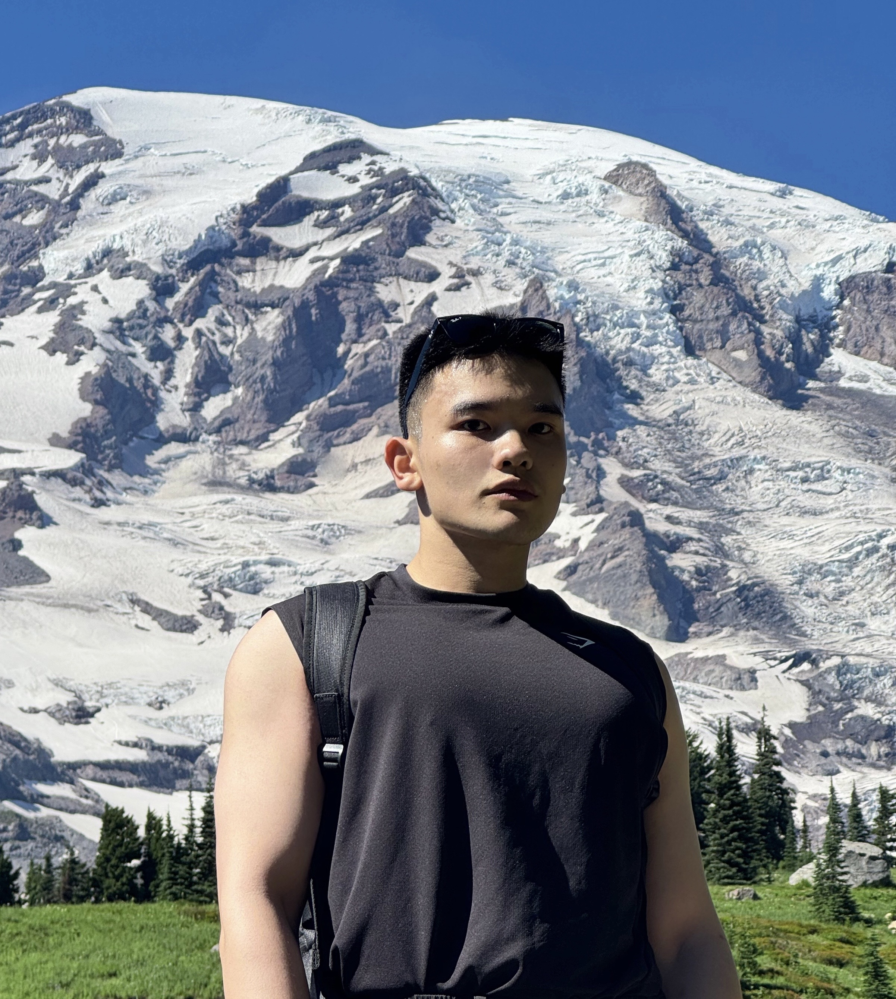

CS graduate student | Future Software Engineer
Coding is not my hobby, it's just another way I perceive the world.
Hello! I'm Liangyou Xu, also go by Yukki, a promising software engineer currently pursuing my graduate degree at Northeastern University. Love taking a good nap before working on a big project.
Originally from China, I am currently living in Seattle, WA and love to explore different cultures and make new connections. Developing new projects and going to the gym are the major two ways to reassure my self-worthness.